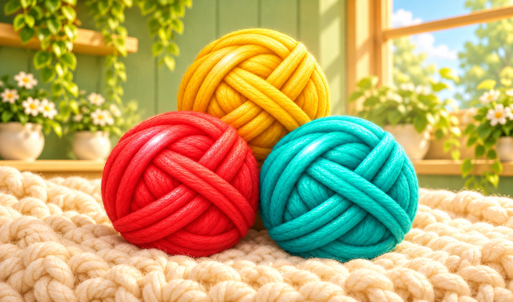

Yarn Fuse
Сбрасывайте клубки пряжи, соединяйте одинаковые и повышайте рекорд.

Об игре
Yarn Fuse — бесконечная головоломка с клубками пряжи. Выбирайте место над полем и сбрасывайте клубок так, чтобы он соприкоснулся с таким же. Пара одинаковых клубков превращается в следующий, более крупный вид, а каждое соединение приносит очки. Пары самых крупных клубков исчезают и тоже пополняют счёт.
Смотрите на очередь следующих клубков и заранее оставляйте им место. Падающие клубки сталкиваются, перекатываются и складываются друг на друга, поэтому положение одного сброса влияет на дальнейшую партию. Подводите одинаковые виды друг к другу и старайтесь не загромождать верхнюю часть поля.
Цель — набрать больше очков и улучшить свой рекорд. Если клубки слишком долго остаются выше границы переполнения, партия заканчивается.
Как играть
- 1.
- Нажмите на игровое поле и перемещайте палец влево или вправо, выбирая место сброса.
- 2.
- Отпустите палец над полем, чтобы сбросить клубок.
- 3.
- Соединяйте соприкасающиеся клубки одного вида и учитывайте очередь следующих.
- 4.
- Набирайте очки, не допуская длительного переполнения верхней части поля.